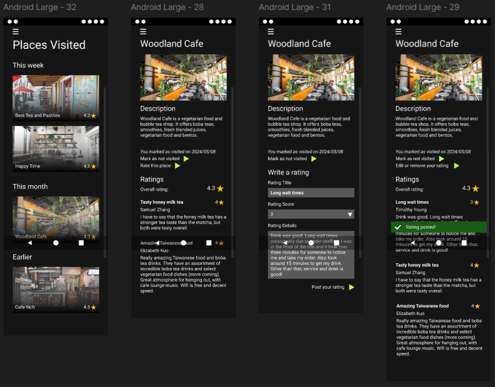
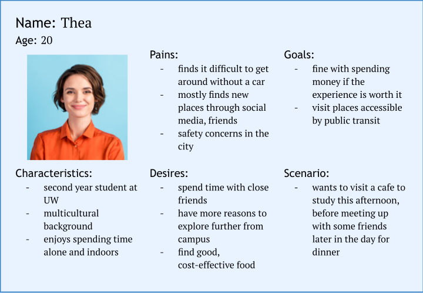
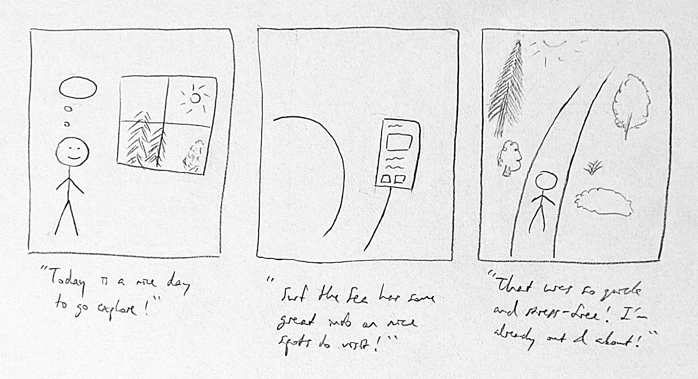
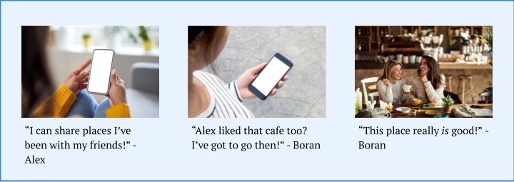
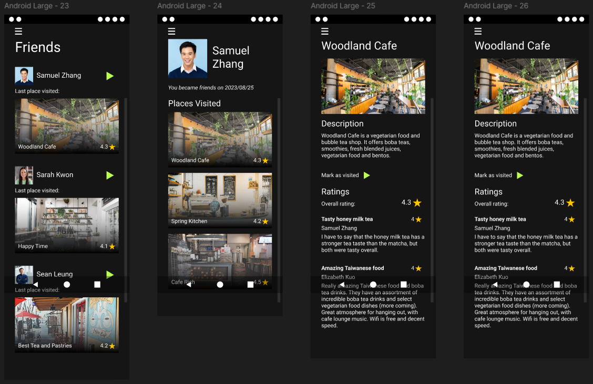

Surf the Sea
Explore Seattle

Young adults who are newcomers to the greater Seattle area may not have a good way to find new spots to visit, whether alone or with friends, that match their interests, budget, and time that they have available in general or on a given day.
Surf the Sea is an app that helps users find local places to explore.
Research Insights
To gauge what user needs my product may aim to address, I conducted user research and interviewed a potential user using a set of questions created with the research interest group. I developed 5 insights from the interview relating to motivations, pains, and goals.
- This person is an introvert who already has established friend groups.
- This person enjoys walking and active exploration.
- This person would rather do something than just sit down to eat or get a drink to explore.
- This person would like to have information on benches, restrooms, water fountains, etc when finding information on a potential location to explore.
- This person prioritizes public transportation and would do well with having more guidance for eg how to take the Link.
Persona
I then used the insights I gained from the user research to create a user persona to use in the design process.
Journey Map
With the persona I created in mind, I mapped a user journey for that persona. It followed the user through a scenario that illustrated their current experience, in order to assess the touchpoints and emotions of the user and see where their experience could be improved.
I created two maps, a visual map and a tabular map.
Design Requirements
I then developed 5 design requirements using my findings from my user research and journey map to begin ideating the features of my product.
- Allow users to add friends and view friends' visited places and ratings.
- Display detailed and uniquely identifying data about a given place.
- Allow users to search for places and categories of places.
- Allow users to add and see places they've been and personal preferences.
- Provide maps with detailed and useful public transportation information.
Storyboards
To illustrate how my design would help users, I created 2 storyboards for 2 different experiences potential users may have with my product. They were created with different visual techniques.
 Lo-Fi Prototype
With the preliminary research and ideation completed, I began prototyping. I created a lo-fi interactive prototype for the app to test my design. It consisted of 3 interactive user flows.
- Through the Visited screen, users can rate and review places they've been.
- The Friends feature lets users see the reviews their friends have made.
- On their Profile, users can select what types of exploration they are interested in to help them get more personalized recommendations.
Experience Evaluation
I conducted user testing on the lo-fi prototype with a potential user.
There were a few main findings from the evaluation. First, there were times when the user did not know where to interact with the screen. I realized I could style the elements so that they more clearly signify their affordances. This means that for the hi-fi prototype, buttons, dropdown menus, links, and other interactive elements should be redesigned for clarity in addition to being styled for appearance.
Another finding from the evaluation was that in almost every case, the screen was scrollable, but the user was unable to recognize that and instead tried to interact only with elements visible on screen load. For the next version of this prototype, a scroll bar that indicated the scrolling functionality should be implemented.
In general, despite those apparent issues in navigation, the user tended to give feedback that the prototype was clear and effective. The user indicated that whether blocks were intended to be images was ambiguous in places, but it did not appear to be significantly impactful.
Additionally, a user flow that was not tested was that of removing a rating for a place. Currently, the prototype's functionality for that task is not well defined, so that should be amended for the hi-fi prototype.
Hi-Fi Prototype
Using the findings from testing the lo-fi prototype through the experience evaluation, I created the hi-fi prototype. I added more cohesive styling and made the appropriate changes as informed by the user testing. These included adding a scroll bar, using color to make navigation more clear, and adding more context for users.
Reflection
This project allowed me to apply my knowledge in many of the key steps of the user design process, including conducting market research, defining user personas, ideation, storyboarding, prototyping, evaluating user experience, and iteration. I found it most difficult to define the problem scope and distinguish my design from already existing products. Overall, I gained experience with effectively presenting my ideas through visual and textual methods.